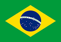

Brazilia (port. Brasília) — 1960-cı ildən Braziliyanın paytaxtı. Şəhər YUNESKO-nun Ümumdünya irsi siyahısına daxil edilmişdir. Şəhərin əhalisi şəhərətrafı ilə birlikdə 2,5 milyon nəfərdir.Braziliyada 1955-ci il prezident seçki kampaniyası zamanı namizəd Juselinu Kubiçek hakimiyyətə gələcəyi təqdirdə yeni paytaxt salınacağına dair vəd vermişdi. 1956-cı ilin aprelində o prezident seçildi və tezliklə yeni şəhərin layihələndirilməsi işləri başladı. Şəhərin baş planının hazırlanması memar Lusio Kostaya həvalə edildi. Bu işdə o Le Korbuzyenin ideyalarından istifadə etmişdi. İnzibati və ictimai binaların layihələndirilməsi isə memar Oskar Nimeyerə tapşırıldı. Yuxarıdan baxdıqda şəhər təyyarəyə bənzəsə də, Lusio Kosta şəhəri nəhəng kəpənək formasında layihələndirdiyini bildirmişdi.[3] 22 aprel 1960-cı ildə şəhər rəsmən Braziliyanın paytaxtı elan edildi.